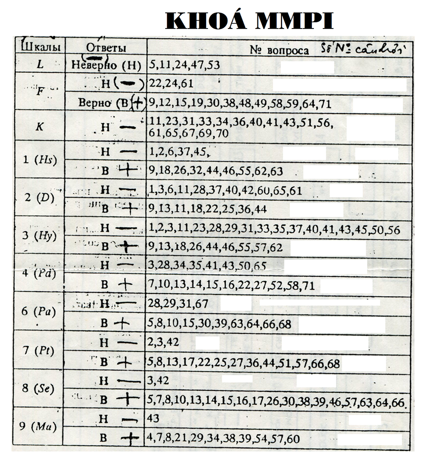
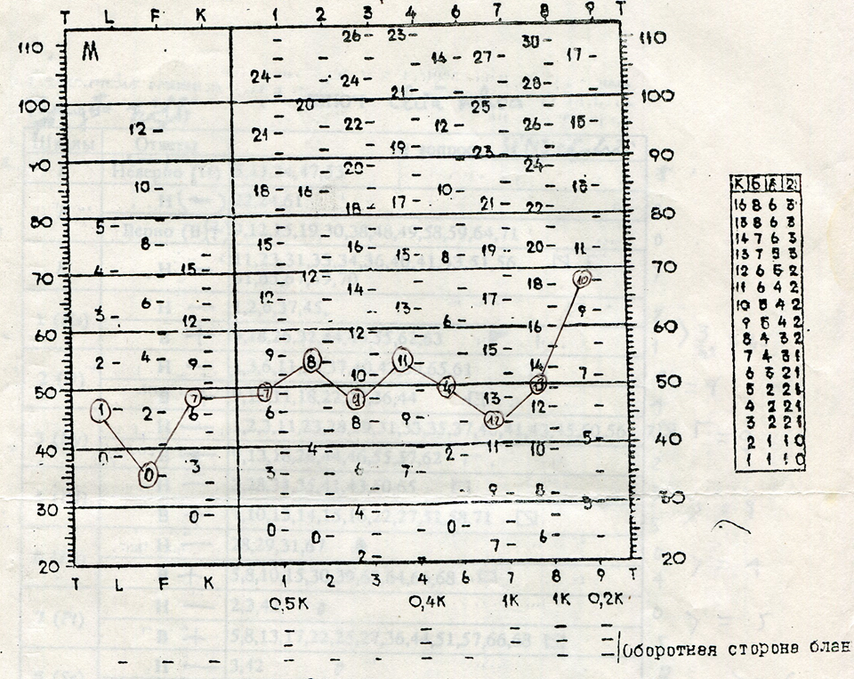

MMPI - Minnesota Multiphasic Personality Inventory là một bài test được chuẩn hóa cho việc đánh giá nhân cách người lớn và những chứng bệnh tâm thần học. Bài test chủ yếu được sử dụng cho những người bị nghi ngờ có vấn đề sức khỏe tâm thần hoặc các vấn đề lâm sàng khác. 10 thang lâm sàng được đánh giá trong bài test là 1. Hs - Nghi bệnh (Hypochondriasis) 2. D - Trầm cảm (Depression) 3. Hy - Rối loạn phân ly (Hysteria) 4. Pd - Biến đổi nhân cách (Personality deviation) 5. Mf - Bệnh lý giới tính (Masculinity - femininity) 6. Pa - Paranoia 7. Pt - Suy nhược tâm thần (Psychasthenia) 8. Sc - Tâm thần phân liệt (Schizophrenia) 9. Ma - Hưng cảm (Hypomania) 0. Si - Hướng nội xã hội (Social introversion). Bài test được đánh giá có mức độ tin cậy là vừa, và có những phê phán cho rằng bài test này ngày càng lạc hậu. Mình được một đứa bạn khoa tâm lý tuồn cho bài test với căn dặn là: đừng mang đi test lung tung, không có ai hướng dẫn, test ra bị bệnh này bệnh kia mệt lắm. Thế nên mình chỉ muốn giới thiệu cho mọi người làm chơi để tham khảo thôi, đừng làm nghiêm trọng nó lên nhá Bài testMMPI có bản 567 câu đúng/sai và bản 338 câu đúng/sai, trong đó bản 338 câu là bản mới nhất. Mình sẽ giới thiệu bản rút gọn của bản 567 câu - gồm 70 câu (1 -> 71, không có câu 27), bản này không đánh giá một vài thang điểm. Khi làm nhớ ghi chú lại câu nào chọn đúng, câu nào chọn sai nha. Spoiler: Bài test 1. Bạn cảm thấy ăn ngon miệng. 2. Mỗi buổi sáng, khi ngủ dậy, bạn cảm thấy thoải mái, dễ chịu. 3. Trong cuộc sống của bạn, có rất nhiều điều thú vị. 4. Bạn làm việc một sự căng thẳng. 5. Thỉnh thoảng trong đầu bạn xuất hiện những ý nghĩ không hay lắm mà bạn không muốn kể về nó. 6. Bạn ít khi bị táo bón. 7. Đôi khi bạn muốn bỏ nhà đi vĩnh viễn. 8. Thỉnh thoảng bạn có những trận cười hoặc khóc không nén được. 9. Thỉnh thoảng bạn cảm thấy ngột ngạt và buồn nôn. 10. Bạn cảm thấy không ai hiểu bạn 11. Đôi lúc bạn muốn chửi rủa 12. Bạn mơ thấy những điều kinh dị 13. Bạn khó tập trung hơn những người khác 14. Những chuyện kì lạ đã và đang xảy ra với bạn 15. Bạn có thể thành đạt hơn trong cuộc sống nếu người ta không chống phá bạn. 16. Hồi còn nhỏ, đã có lần bạn “đánh thó” một vật gì đó. 17. Đã có mấy ngày hoặc hàng tuần thậm chí cả tháng trời bạn khôg làm được việc gì cả bởi vì bạn không thể bắt mình tập trung vào công việc. 18. Bạn ngủ không sâu hay chập chờn tỉnh giấc 19. Khi ở chỗđôngngườibạn hay nghethấynhữngđiềukìquái 20. Phần lớn những người quen biết bạn không cho bạn là người khó chịu 21. Bạn thường phải phục tùng những người kém hiểu biết hơn bạn 22. Đa số mọi người bằng lòng với cuộc sống hơn bạn 23. Rất nhiều người phóng đại nỗi bất hạnh của mình để mong được an ủi và giúp đỡ. 24. Thỉnh thoảng bạn cáu giận 25. Bạn thường không tự tin 26. Bạn thường có cảm giác rằng mình đã làm một điều gì đấy không đúng hay không tốt 28. Bạn thường tự mình bằng lòng với số phận của chính mình 29. Một số người rất thích chỉ huy người khác đến nỗi bạn chỉ muốn làm ngược lại những điều họ nói, mặc dù biết họ đúng. 30. Bạn cho rằng người ta đang nghĩ ra một điều gì đấy để chống lại bạn 31. Phần lớn mọi người tìm cách kiếm lợi cho mình bằng con đường không chân chính 32. Dạ dày của bạn thường xuyên quấy rầy bạn 33. Bạn không hiểu được tại sao trước khi chuẩn bị làm một việc gì đó, bạn thường rơi vào trạng thái căng thẳng. 34. Thỉnh thoảng những ý nghĩ trong đầu bạn xuất hiện nhanh đến mức bạn không kịp nói. 35. Bạn cho rằng cuộc sống gia đình của bạn hạnh phúc không kém đa số gia đình khác mà bạn biết. 36. Đôi khi bạn thấy mình là người vô ích 37. Những năm gần đây bạn cảm thấy mình khoẻ khoắn. 38. Có những thời kỳ mà bạn làm một việc gì đấy, sau đó không thể nhớ được bạn đã làm gì. 39. Bạn cho rằng người ta khiển trách bạn không đúng 40. Chưa lúc nào bạn cảm thấy mình khoẻ khoắn hơn bây giờ 41. Bạn không quan tâm đến việc người ta nghĩ bạn như thế nào 42. Bạn nhớ rằng cuộc sống của bạn rất tốt đẹp 43. Bạn khó nói chuyện với những người mới quen 44. Phần lớn thời gian bạn cảm thấy mình mệt nhọc 45. Bạn ít khi bị đau đầu. 46. Thỉnh thoảng bạn khó giữ được thăng bằng khi đi lại 47. Bạn không thích một số người quen của bạn 48. Có ai đó đang tìm cách đánh cắp những ý tưởng của bạn 49. Bạn cho rằng mình có những hành động không thể tha thứ 50. Bạn cho rằng bạn quá rụt rè 51. Hầu như lúc nào bạn cũng lo sợ một điều gì đấy 52. Bố mẹ bạn thường không có cảm tình với những người quen của bạn 53. Thỉnh thoảngbạncũngđưachuyệnngườinàyvớingườikhác 54. Đôi khi bạn cảm thấy quyết định một việc gì đấy rất dễ dàng 55. Có những lúc tim bạn đập mạnh đến nỗi bạn phải nín thở 56. Bạn nóng tính nhưng hài hước 57. Có những thời kì bạn lo lắng một điều gì đấy đến mức không thể ngồi yên tại chỗ được. 58. Bố mẹ bạn và những người kháctrong gia đình bạn thường xa lánh bạn 59. Không ai quan tâm đến số phận của bạn 60. Bạn không để ý tới những người lợi dụng sự sai lầm của người khác để phục vụ cho lợi ích của mình 61. Đôi lúc bạn đầy khí thế và nghị lực 62. Thời gian gần đây thị lực của bạn giảm sút 63. Bạn thường cảm thấy có tiếng ồn trong tai 64. Trong cuộc sống có lần bạn cảm thấy như bị thôi miên 65. Có những lúc bạn cảm thấy rất vui mà không biết vì sao 66. Bạn cảm thấy cô đơn cả nhưng lúc ở cùng với mọi người 67. Bạn cho rằng bất cứ ai cũng có thể nói dối để tránh những điều phiền phức 68. Bạn nhạy cảm hơn so với những người khác 69. Có những lúc đầu óc bạn làm việc chậm chạp hơn so với bình thường 70. Nhiều người làm cho bạn thất vọng 71. Bạn lạm dụng rượu. Cách chấm điểm Spoiler: Bảng chấm điểm thô  Điểm sẽ được phân phối thành 3 thang phụ và 8 thang chính. Mỗi thang sẽ có 2 phần: phần H (được điểm khi câu trả lời là "không"), và B (được điểm khi câu trả lời là "có"). Sau đó cộng điểm 2 phần này lại, thành điểm của thang đó. Trong đó: 3 thang phụ là: - L (Nói dối): nếu thang này tăng cao, có nghĩa là người bệnh trả lời không chân thành hoặc nhân cách còn non nớt. - F (Tin cậy): thang này nói về độ tin cậy của các câu trả lời. Nếu F tăng quá cao, có thể đó là dấu hiệu của sự cố tình làm sai lệch kết quả hoặc không hiểu hết câu hỏi, song cũng có thể là dấu hiệu của một trạng thái loạn thần rõ rệt. - K (Điều chỉnh): nhằm phát hiện khuynh hướng che dấu hoặc làm giảm nhẹ các triệu chứng loạn thần. Cũng có khi ngược lại, một khuynh hướng quá cởi mở. Nếu thang F - K < 20, có nghĩa là kết quả trắc nghiệm đủ độ tin cậy 8 thang chính là 1. Hs - Nghi bệnh (Hypochondriasis): Thang này tăng cao chứng tỏ có nhiều phàn nàn về thực thể, muốn thu hút sự chú ý của người khác. 2. D - Trầm cảm (Depression). 3. Hy - Phân ly (Hysteria). thang tăng cao, nói đến một nhân cách dạng phân li, có khuynh hướng sử dụng những cơ chế tự vệ vô thức. 4. Pd - Biến đổi nhân cách (Personality Deviation): liên quan đến những vấn đề về cảm xúc, xung động. 6. Pa - Paranoia: Khuynh hướng hình thành các ý tưởng quá đáng, thù dai. 7. Pt - Suy nhược tâm thần (Psychasthenia ): liên quan đến mức độ lo âu. 8. Sc - Tâm thần phân liệt (Schizophrenia). tính cứng nhắc của tư duy hoặc cảm xúc, nguội lạnh trong tình cảm và các mối quan hệ xã hội. 9. Ma - Hưng cảm nhẹ (Hypomania): Tính lạc quan, tích cực hoặc phủ định lo âu. Kết quả Spoiler: Thiết đồ nhân cách  Biểu diễn các thang điểm phía trên lên thiết đồ này. Lưu ý: thang 1, 4,7,8,9 cộng vào điểm gốc thêm 0.5K, 0.4K, 1K, 1K, 0.2K trước khi biểu diễn lên thiết đồ. Ví dụ: một người có thang 1: 10 điểm, thang K: 10 điểm => biểu diễn lên thiết đồ thang 1: 10 + 0.5*10 = 15 điểm (mức 15 điểm của thang 1 nằm giữa 70 và 80) Nhân cách bình thường sẽ nằm trong khoảng từ 40 - 60 (50 cộng trừ 10), nếu >70 hay < 30 được xem là có dấu hiệu bệnh lý. (Như thiết đồ ở trên, có thang 9 hơi cao, nhưng vẫn chưa đến mức 70) Nói thêm về các thang Spoiler: Thang L Thang L được xây dựng từ 15 câu hỏi. Điểm thang này tăng có thể do khách thể muốn mô tả bản thân một cách hoàn thiện. Ví dụ, trả lời không với câu Đôi khi tôi cũng nổi nóng. Tuy nhiên khi phân tích cũng cần lưu ý đến nhân thân của khách thể. Những người tinh tế về tâm lý, có trí tuệ, học vấn, ở tầng lớp trên (về kinh tế-xã hội) thì thường có điểm L thấp (điểm thô khoảng từ 0 đến 1). L cao cũng còn có thể là khách thể muốn thể hiện bản thân một cách hoàn hảo, song lại kém linh hoạt, không ý thức được ấn tượng họ gây ra cho người khác. Họ tiếp nhận thế giới một cách cứng nhắc, tự kỉ trung tâm. L quá cao thể hiện sự quá cứng nhắc, có những khó khăn trong quan hệ. L quá cao còn có thể là do hoang tưởng hoặc do ý đồ nói dối của các nhân cách chống đối xã hội. L thấp nói lên một con người cởi mở, sẵn sàng hợp tác, nói năng rành mạch. Họ cũng có thể là người hay châm biếm, theo chủ nghĩa hoài nghi. Spoiler: Thang F Nội dung chính của thang này đề cập đến cách trả lời khác thường của khách thể. Thang không gắn với một phẩm chất nhân cách hoặc một hội chứng nào. F cao thường đi đôi với sự tăng cao ở một số thang lâm sàng. Điểm F tăng cao cũng có thể là một chỉ số chung về bệnh lý hoặc phản ánh tình cảm khác thường đối với một sự kiện lớn nào đó của cuộc sống, ví dụ, thất nghiệp, li dị, mất mát người thân… Điểm F tăng cao cũng còn có thể là sự giả bệnh và điều này có thể làm cơ sở loại bỏ biên bản mà không cần phải phân tích, lý giải sâu. Điều đáng tiếc là không có điểm chuẩn nào để phân định đâu là biên bản có hiệu lực (tin cậy) và đâu là không. Ngay cả điểm T ở khoảng 50 - 70, kết quả cũng không hẳn đã là không đáng tin cậy. Những khía cạnh tiếp theo cần xem xét ở hiệu số F - K F >= 100 (bài test 567 câu) - thiết đồ nhân cách không hiệu lực. Đó có thể là do sự trả lời đại khái, qua loa hoặc do bệnh lý, đặc biệt là do hoang tưởng. Tuy nhiên ngay cả khi bệnh nặng, nếu khách thể trả lời cẩn thận thì cũng ít khi F >= 100. Nếu F < 100 có thể có ảo giác, hoang tưởng, thu mình hoặc thích ứng kém. F đạt 80 – 90 – có thể có ý nghĩ kì dị, khác thường, dạng chống đối xã hội. F 70 – 90 còn có thể là sự kêu gọi trợ giúp. 65 – 75 nếu không có nghi ngờ bệnh lý thì đó có thể là do tính cầu kì, tinh tế, phức tạp hoá, không ổn định hoặc cảm tính. F thấp. Khách thể tiếp nhận thế giới như những người khác. Tuy nhiên nếu trong bệnh sử có đặt vấn đề theo dõi bệnh lý thì đây là sự chối từ những khó khăn, giả bộ tốt (“faking good”). Lưu ý thêm F – K. Spoiler: Thang K Thang K được thiết kế để nhằm xác định mức độ quá tốt mà khách thể sử dụng để mô tả bản thân. K rất gần với L. Tuy nhiên K khác ở chỗ nó tinh vi và hiệu quả hơn. Những người chất phác, không quá tinh tế có thể có L cao. Trong khi đó, những người có trí tuệ, tinh tế về tâm lý có thể tăng cao thang K (điểm T 55 – 70) mà không có sự tăng cao thang L. K ở mức độ vừa: cái tôi mạnh, cơ chế phòng vệ, cảm xúc tốt, thích ứng với hiện tại. Thang K có quan hệ mật thiết với các thang 8,7 và 0. Spoiler: Chỉ số F-K Sự chênh lệch giữa F và K được xem như là chỉ số về mức độ giảm hiệu lực của thiết đồ nhân cách. Chỉ số này được xác định bởi hiệu số điểm thô của 2 thang F và K. F – K >= +11 ở mức độ này đã xuất hiện nguy cơ thiết đồ nhân cách mất hiệu lực do giả bệnh. Điều này có thể là do giả hoặc do kêu gọi sự giúp đỡ. Tuy nhiên cũng cần thận trọng bởi không phải trường hợp nào F – K lớn cũng đồng nghĩa với kết quả không tin cậy. F – K cao còn có thể gặp ở người bệnh loạn thần nặng F – K <= -11 Khách thể che giấu, giảm thiểu các khó khăn và cố gắng tạo một hình ảnh tốt về bản thân. Vì vậy khi phân tích các thang lâm sàng cần chú ý đến điều này. F – K <= - 20 cơ chế phòng vệ rất cao, họ có thể từ chối hợp tác. Spoiler: Thang 1- Nghi bệnh (Hs) Lúc đầu, thang Hs được thiết kế để nhằm phân biệt giữa nghi bệnh với các thể bệnh tâm thần khác. Tuy nhiên kết quả ứng dụng thực tiễn cho thấy nó còn thể hiện các đặc điểm nhân cách tương đối bền vững, đi cùng song không phải là nhất thiết, với nghi bệnh. Điểm Hs tăng cao không chỉ lưu ý đến rối nhiễu mà còn có thể là tự kỉ trung tâm, hoài nghi, hay kêu ca, kích động thụ động. Phàn nàn của họ thường liên quan đến rất nhiều các triệu chứng cơ thể khác nhau. Mục đích chính của những phàn nàn này là nhằm thăm dò thái độ cũng như thu hút sự chú ý của người khác. Những phàn nàn của họ mang tính chất lan toả, không cố định, hay chuyển chỗ. Họ cũng thường là những người quá nhiều lần đi khám bác sĩ và cũng đi khám rất nhiều nơi. Tuy nhiên họ không chấp nhận rằng những triệu chứng của họ chỉ là bệnh tưởng. Thang 1 có thể tăng cao cùng với thang 2, 3 và 7. Đây có thể là sự thể hiện của trầm cảm, lo âu. Những người có điểm Hs ở mức độ trung bình có thể có những dấu hiệu cơ thể thực sự. Tuy nhiên nếu điểm tương đối cao thì có thể là dấu hiệu tăng bệnh. Nếu thang 7 cũng tăng thì đây có thể là chỉ định tốt cho liệu pháp tâm lý bởi mức độ lo âu cao sẽ là động cơ thúc đẩy thay đổi. Thang 1 thấp. Trước hết cho thấy là không có phàn nàn về cơ thể. Cũng có thể đây là người không quan tâm nhiều tới sức khoẻ. Nhìn chung họ có thể là người có năng lực, thông minh. Spoiler: Thang 2 - Trầm cảm (D) Thang 2 gồm 60 câu về những dấu hiệu có thể có ở trầm cảm: rầu rĩ, suy tư, chậm chạp về cơ thể, cảm giác chủ quan về trầm cảm, suy nhược tâm thần, suy nhược cơ thể. Khi phân tích thang D cần lưu ý đến tuổi của khách thể: thanh, thiếu niên thường có điểm thấp hơn so vớí người lớn khoảng 5 –10 điểm; người già còn cao hơn khoảng 5 – 10 điểm nữa. Điều này là do con người có những phàn nàn khác nhau, không chỉ là những phàn nàn mang màu sắc trầm cảm mà cả những phàn nàn về cơ thể, về tính kích thích, những khó khăn trong quan hệ liên nhân cách, những vấn đề liên quan đến lao động, nghề nghiệp, những mong muốn nói chung không được thoả mãn. Nếu thang 7 cũng tăng thì đó có thể là tự lên án, tự trừng phạt của trầm cảm kèm theo kích thích và căng thẳng. Trong một số trường hợp, thang 2 và thang 7 tăng vừa thì có thể đáp ứng được liệu pháp tâm lý bởi họ có động lực thay đổi. Thang 2 và thang 7 còn được gọi là các thang distress bởi chúng là chỉ số của những lo âu, đau khổ, bất toại. Nếu thang 2 tăng cùng với thang 8 thì đó có thể là những dấu hiệu của trầm cảm kèm theo tư duy dị thường, cách li xã hội. Thang 2 tăng cao có nghĩa là tăng nguy cơ tự sát, đặc biệt nếu kèm theo tăng cao các thang 4, 7, 8 và/hoặc 9. Tuy vậy cũng cần thận trọng khi phân tích bởi chưa có một “thiết đồ tự sát”. Mọi giả thiết về hành vi tự sát cần phải được đặc biệt lưu ý, phải được thăm khám kĩ và kịp thời có các biện pháp ngăn ngừa. Đỉnh ở thang 2, đặc biệt khi nó nó là duy nhất thì đó có thể là trầm cảm phản ứng. Khách thể có thể đang đối đầu với những khó khăn của mình nhưng với tinh thần bi quan, vô vọng và cô đơn, không người giúp đỡ. Điều này cũng có thể trở thành đặc điểm nhân cách và nó có thể là một nét tăng bệnh khi khách thể phải đối đầu với những vấn đề hiện tại. Thang 2 thấp không chỉ là dấu hiệu không có trầm cảm mà còn có thể là của một người vui vẻ, lạc quan, thông thái, lắm sáng kiến và hướng ngoại. Họ cũng có thể là người ích kỉ, tự đánh giá cao bản thân. Spoiler: Thang 3 - Rối loạn phân ly (Hy) Về cơ bản, thang 3 được thiết kế để nhằm xác định những người có rối loạn tâm căn trên nền rối loạn vận động hoặc giác quan. Tất cả có 60 câu bao gồm những phàn nàn về cơ thể, rất đặc trưng như: rối loạn giấc ngủ, buồn nôn, nôn, đau đầu, đau ngực, đau tim… Một đặc điểm quan trọng đối với những người có điểm Hy cao là một mặt, họ có những phàn nàn về cơ thể, nhưng mặt khác họ cũng từ chối sự trợ giúp với một kiểu cách tăng đậm của tính lạc quan. Theo một số tác giả (Groth-Marnat, 1990), cách thức đối phó với lo âu của những người này chính là họ chuyển những khó khăn của mình lên cơ thể. Do vậy những phàn nàn về cơ thể cũng có thể là sự thể hiện gián tiếp xung đột. Những đặc điểm này có thể khá bền vững và trở thành nét nhân cách đối với nhà người có kiểu nhân cách biểu diễn (nét tính cách hysteria). Họ có thể rất dễ dàng khởi đầu các mối quan hệ song không sâu sắc và khá hời hợt. Họ thường hay thể hiện tính duy kỉ trung tâm. Khi phân tích cũng cần lưu ý một số điểm như: nữ thường cao điểm hơn nam; người có học vấn cao thuộc tầng lớp trên của xã hội cũng thường có điểm cao hơn. Thang 3 ở mức độ trung bình, nếu khách thể thuộc tầng lớp trên thì có thể có mức độ thích ứng tốt. Thang 3 thấp: có thể gặp ở những cá nhân suy nghĩ hạn hẹp, cách li xã hội. Spoiler: Thang 4 - Rối loạn nhân cách (Pd) Mục đích chính của thang là đánh giá mức độ thích ứng xã hội. Các câu hỏi liên quan đến những vấn đề sự gắn kết gia đình, những khó khăn trong các mối quan hệ với nhà trường, với các nhà chức trách và gắn kết cá nhân với xã hội. Thang 4 tăng cao có thể là chỉ báo rằng khách thể có những vấn đề rắc rối về xã hội, pháp luật, về hôn nhân hoặc trong công việc. Khách thể thường không rút ra được bài học từ những sai lầm của mình. Họ cũng là người kém chịu đựng đối với những điều buồn, đau khổ. Nếu thang 4 tăng quá cao, khách thể có thể là người có những hành vi kích động, tấn công người khác. Họ là những người kém ổn định, thiếu trách nhiệm, vị kỉ. Họ cũng còn có thế là người có nhiều thời gian dính đến pháp luật do những hành vi chống đối xã hội của họ. Thang 4 tăng vừa: khách thể có thể được xem như là người thích phiêu lưu, săn tìm lạc thú, giao lưu rộng, hay mơ tưởng. Thang 4 thấp dưới 45: khách thể là người quá nghiêm khắc với bản thân. Họ cũng là người có thể vui vẻ, lịch sự, kiên định và khiêm tốn nhưng hơi thụ động. ở lứa tuổi thanh thiếu niên, thang 4 thường tăng cao hơn khoảng 4 điểm. Điều này là do ý định muốn tự khẳng định bản thân. Spoiler: Thang 5 - Nam tính, nữ tính (Mf) Lúc ban đầu, thang được thiết kế để nhằm phân lập những người tình dục đồng giới và rối loạn xác định giới. Tuy nhiên kết quả không đã đi theo hướng thiết kế mà lại đi theo hướng làm sáng tỏ những hứng thú về vai trò của nam giới và nữ giới. Thang 5 không phải là thang lâm sàng theo nghĩa hẹp và nó cũng không cung cấp các thông tin về lâm sàng. Tuy nhiên nó lại đóng vai trò hỗ trợ cho việc phân tích các thang lâm sàng. Ví dụ, thang 4 tăng cao có thể là chỉ báo rằng khách thể là người có những hành động cảm tính, bột phát, không kiểm soát được bản thân khi có stress. Nếu đó là nam giới, khách thể có thể thể hiện những bất mãn của mình bằng hành động. Ngược lại, thang 4 tăng cùng với thang 5 thì đó có thể là hướng nội nhiều hơn, nhạy cảm hơn và họ có thể chuyển thái độ chống đối sang cải tạo xã hội. ở nam giới, không được chẩn đoán là tình dục đồng giới khi có thang 4 tăng cao. Tuy nhiên cũng cần lưu ý đến học vấn và tầng lớp kinh tế - xã hội của khách thể. Nam có học vấn thường điểm cao và nữ có học vấn thường điểm thấp. Những phụ nữ có điểm cao thường là người thực hiện những vai trò truyền thống dành cho nam giới trong các lĩnh vực nghề nghiệp như cơ khí, khoa học. Họ được mô tả là người có tư tưởng cạnh tranh, quyết đoán và ưa phiêu lưu. Phụ nữ có học vấn thấp, điểm thang 5 thấp được xem như là người tuân theo những vai trò truyền thống dành cho nữ giới. Họ thường là người thụ động, phục tùng, khiêm tốn. Cùng với mức điểm như vậy nhưng nếu là phụ nữ có học vấn thì họ có thể là những người có trí tuệ, mạnh mẽ, có năng lực. ở nam giới, có những thiết đồ tăng cả thang 4 và 5. Một thiết đồ như vậy không chỉ là sự thể hiện của những nét tính cách độc đáo, dị thường mà còn có cả tính thích khoa trương về những cái khác thường đó. Ngược lại, nếu thang 4 thấp và thang 5 cao (đối với nam) thì đó có thể là người ưa mọi chuyện phải rõ ràng, rành mạch, thậm chí đến cứng nhắc và thích thể hiện nam tính. Nếu thang 4 và thang 5 tăng cao ở phụ nữ, họ có thể là những người nổi loạn chống lại những kiểu nữ tính truyền thống. Nếu thang 4 tăng cao đáng kể, sự nổi loạn như vậy gần với bệnh lý. Spoiler: Thang 6 - Paranoia (Pa) Thang 6 được thiết kế để nhằm phân lập được người có nét tính cách paranoia với người có trạng thái paranoid. Những dấu hiệu mà thang hướng tới đo là: mức độ nhạy cảm liên nhân cách, tự cho mình là đúng và nghi ngờ. Rất nhiều câu tập trung vào các lĩnh vực như ý tưởng hoang tưởng, nghi ngờ lan toả, cảm giác bị hành hạ, quấy rầy, sự cứng nhắc trong các mối quan hệ xã hội, trước hết là các quan hệ liên nhân cách. Tăng nhẹ thang 6: người có tình cảm, trái tim mềm yếu, nhạy cảm trong các mối quan hệ. Nếu tăng cao:các nét tính cách có thể trở thành bệnh lý: có thể có hoang tưởng hoặc rối loạn tư duy. Ngược lại, thang 6 thấp: đó có thể là con người tự cân bằng. Tuy nhiên cũng có sự khác biệt về giới. Nam thì được mô tả là người nhiệt tình, kỉ tâm (cá nhân mình là trung tâm), dứt khoát, phạm vi hứng thú hẹp. Nữ thường được mô tả là người chín chắn, tính toán hợp lý. Điểm quá thấp: cũng có thể là paranoid nhưng khách thể giấu bệnh. Thang 6 và thang 8 tăng cao có thể nghĩ đến tâm thần phân liệt thể paranoid. Spoiler: Thang 7 - Suy nhược tâm thần (Pt) Thang 7 gồm 48 câu được thiết kế để đo hội chứng suy nhược tâm thần. Mặc dù hiện nay thuật ngữ suy nhược tâm thần không còn chính thức được sử dụng song khi thiết kế, khái niệm này có trong hệ thống thuật ngữ chẩn đoán. Mặt khác, do MMPI không phải là bảng chẩn đoán bệnh nên trong một chừng mực nào đó, đây thuần tuý là tên gọi, còn nội dung của nó được lý giải khi phân tích. Hội chứng suy nhược tâm thần bao gồm trạng thái cưỡng bức, ám ảnh, sợ vô cớ. Có thể nói hội chứng này khá gần với rối loạn ám ảnh cưỡng bức. Tuy nhiên cũng có những điểm khác biệt cơ bản. Thang 7 nhằm đo những sự sợ hãi, lo âu đang diễn ra ở khách thể. Ngược lại, người có rối loạn ám ảnh cưỡng bức đang tiềm tàng thì có thể đạt điểm thấp. Tuy nhiên khi thang 7 tăng cao thì cũng có nghĩa là tăng nguy cơ rối loạn ám ảnh cưỡng bức và các rối loạn liên quan đến lo âu. Thang 7 cũng nhằm đo lo âu. Do vậy, nếu tăng cao cao ở thang 2 thì đó có thể là chỉ báo về rối loạn stress (distress): sự căng thẳng, khó tập trung, lo lắng cưỡng bức. ở khía cạnh y học, họ phản ứng quá mức với cả những biến chứng/tác dụng phụ nhỏ nhất của thuốc. Họ thường là những người cứng nhắc, dễ kích động, hay sợ hãi và lo âu. Những phàn nàn của họ tập trung chủ yếu vào hệ tim mạch, tiêu hoá và sinh dục-tiết niệu. Nếu cả 2 thang 7 và 2 đều tăng thì họ có thể đáp ứng tốt với liệu pháp tâm lý. Việc trị liệu có thể kéo dài song bù lại, những tiến bộ của họ, dù nhỏ, cũng khá chắc. Nếu điểm của họ quá cao, có thể cần dùng thêm thuốc giải lo âu và những biện pháp thư giãn. Cũng cần phải lưu ý đến sự liên quan giữa thang 7 và thang 8. Nếu thang 7 tăng cao hơn thang 8 thì đó sẽ là chỉ báo rằng khách thể vẫn còn trong trạng thái lo âu và vẫn đang giằng xé bởi quá trình loạn thần. Tuy nhiên nếu thang 7 tương đối thấp so với thang 8 thì điều đó có thể là khách thể từ bỏ cuộc đấu tranh với các rối loạn và quá trình đã trở thành mạn tính. Spoiler: Thang 8 - Tâm thần phân liệt (Sc) Thang 8 được thiết kế để phân lập người đang trong trạng thái tâm thần phân liệt hoặc dạng tâm thần phân liệt. Tuy nhiên cũng cần lưu ý một lần nữa rằng đây không phải là tiêu chuẩn chẩn đoán tâm thần phân liệt và các câu trong thang này đề cập đến nhiều lĩnh vực khác nhau. Có những câu đề cập đến các mối liên hệ, quan hệ xã hội, quan hệ trong gia đình, quá trình tư duy dị thường, tri giác hoang tưởng, khó tập trung, lo sợ lan toả, không có khả năng đối phó, kiểm soát được xung động. Nhìn chung nếu thang 8 tăng cao thì có thể là sự chỉ báo rằng khách thể cảm thấy ít gắn bó, thân thiện, cách li xã hội và những hiểu biết lệch lạc. Họ có thể có những huyễn tưởng về cuộc sống và khi phải đối mặt với stress thì họ có thể thu rút tương lai vào huyễn tưởng. Một số khác trở nên tự kỉ, ý nghĩ của họ đến lộn xộn và họ không có khả năng xắp xếp lại chúng, các kĩ năng xã hội trở nên nghèo nàn. Lứa tuổi cũng đóng vai trò nhất định. Thanh thiếu niên thường có điểm cao hơn. Thang 8 thấp có thể là chỉ báo rằng khách thể là người niềm nở, thân thiện, chân thành và dễ thích ứng. Tuy vậy họ cũng có thể dễ bị bắt nạt, dễ phục tùng, chậm hiểu (theo kiểu nghèo tưởng tượng), né tránh, không sâu sắc trong các mối quan hệ. Spoiler: Thang 9 - Hưng cảm nhẹ (Ma) Thang 9 gồm 46 câu nhằm phân lập những người có các triệu chứng hưng cảm nhẹ. Những triệu chứng này bao gồm khoái cảm bệnh lý mang tính chu kì, tăng tính kích thích, tăng các hoạt động không hiệu quả. Do vậy các câu tập trung vào những chủ đề như mức độ sử dụng/tiêu hao năng lượng, tính kích thích, tự kỉ trung tâm… Tuy nhiên cũng có điểm cần lưu ý là hưng cảm nhẹ thường xuất hiện theo chu kì. Người đang trong trạng thái cấp có thể không làm được test. Điểm thấp có thể là đang ở pha trầm cảm, cũng có thể là hưng cảm nhẹ đang tiềm ẩn hoặc trong quá khứ. Nhìn chung điểm thang 9 tăng rất cao có thể là chỉ báo về một pha hưng cảm vừa. Khách thể khó tập trung chú ý, tăng động, tư duy dồn dập nhưng kém hiệu quả, kém kiểm soát bản thân. Thang 9 thấp: có thể là chỉ báo mức độ thấp của năng lượng, hoạt động. Họ cũng có thể được mô tả là người hay phụ thuộc, hay phản ứng, hoặc cũng có thể là người thu mình, ít giao tiếp. Nếu điểm thang 9 quá thấp thì đó có thể là trầm cảm mức độ nặng thậm chí thang 2 vẫn bình thường. Spoiler: Thang 0 - Hướng nội xã hội Thang được phát triển từ những câu trả lời của sinh viên về những vấn đề có liên quan đến tính hướng nội – hướng ngoại. Điểm cao chỉ báo khách thể là người hay rụt rè, e ngại, ít các kĩ năng xã hội. Họ thường cảm thấy mất tự nhiên khi xung quanh là những người khác giới. Họ thích ở một mình hoặc là với nhóm nhỏ bạn bè thân hơn là nhóm đông người. Cũng giống với thang 5, thang 0 nhằm tô đậm, bổ sung các thang lâm sàng khác. Do vậy khi phân tích MMPI trước hết cần chú ý đến thang 5 và thang 0. Thang 0 tăng sẽ là những thông tin bổ sung cho các thang khác theo hướng mức độ thoải mái của khách thể trong tương tác liên nhân cách, mức độ hội nhập và kĩ năng xã hội của họ. Thang 0 giảm cũng làm giảm mức độ bệnh lý. Thậm chí ngay cả khi họ có những vấn đề bệnh lý song mức độ thích ứng xã hội của họ đã làm giảm nhẹ các vấn đề và khả năng tiếp nhận của những người xung quanh cũng khá hơn.
Việc hiểu rõ bản thân mình rất có lợi, kể cả việc hiểu rõ chứng tâm lý mình mắc phải. Mình có thể gọi là bị hưng cảm nhẹ. Sau một khoảng thời gian hưng phấn, đam mê, nhiệt tình, điên cuồng, thì sẽ có một khoảng lặng xuống, chán nản, lười biếng, và tự hỏi ý nghĩa của những việc vừa mới làm, rồi tương sao sẽ ra sao. Nhưng không sao, không có gì phải lo lắng, vì mình biết qua giai đoạn này thì mình sẽ lại đầy sức sống, làm việc, học tập như điên ._. P/s: Thang tâm thần phân liệt của mình cũng khá cao :v
1 Sai 2 sai 3 sai 4 sai 5 đúng 6 sai 7 đúng 8 đúng 9 đúng 10 sai 11 đúng 12 sai 13 sai 14 đúng 15 sai 16 đúng 17 đúng 18 đúng 19 đúng 20 sai 21 đúng 22 đúng 23 đúng 24 đúng 25 đúng 26 đúng 28 sai 29 đúng 30 đúng 31 đúng 32 đúng 33 đúng 34 đúng 35 sai 36 đúng 37 sai 38 đúng 39 sai 40 sai 41 sai 42 sai 43 đúng 44 đúng 45 sai 46 sai 47 đúng 48 đúng 49 đúng 50 đúng 51 đúng 52 sai 53 đúng 54 đúng 55 đúng 56 đúng 57 đúng 58 sai 59 sai 60 đúng 61 đúng 62 đúng 63 đúng 64 đúng 65 đúng 66 đúng 67 đúng 68 đúng 69 đúng 70 đúng 71 sai